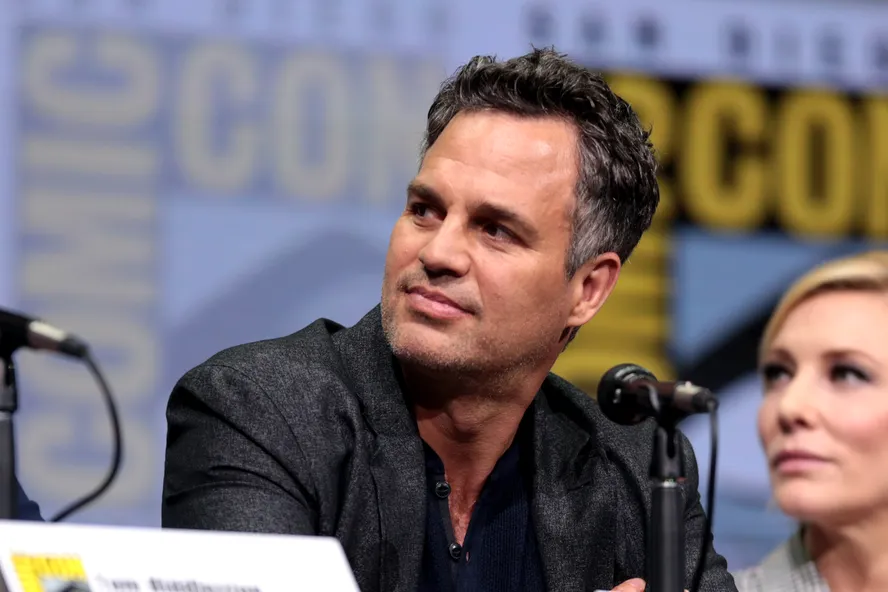
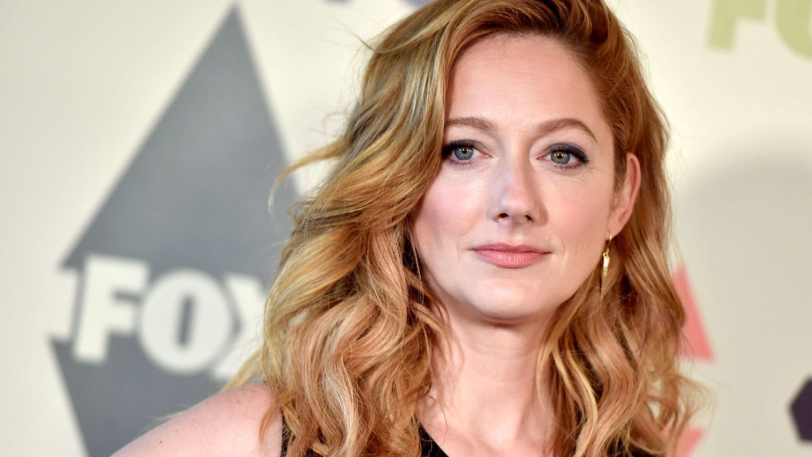
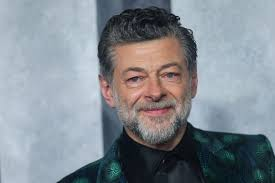

Jennifer Garner interpretou ( Jenna Rink)ela é uma atriz norte-americana mais conhecida pelos papéis nos filmes De Repente 30, Juno e Elektra. Ela nasceu em Houston, no Texas, mas cresceu em Charleston, na Virgínia. Sua mãe era professora de inglês e o pai engenheiro químico.Ela é Atriz , Produtora e Produtor Executivo. Nasceu no dia 17 de abril de 1972 idade de 52 anos.
Mark Ruffalo interpretou ( Matt Flamhaff, melhor amigo de Jenna ) nasceu no dia 22 de novembro de 1967 idade de 56 anos. Apesar de ter um pequeno papel em Ride With The Devil (1999), a primeira participação de destaque de Mark Ruffalo no cinema vem com o premiado drama Conte Comigo (2000). Ele conquista papéis importantes no thriller erótico Em Carne Viva (2003) e no drama Brilho Eterno de uma Mente Sem Lembranças (2004), antes de se lançar em comédias românticas como De Repente 30 (2004) e Dizem Por Aí... (2005).
Judy Greer interpretou ( Lucy Wyman, melhor amiga de Jenna ) ela nasceu no dia 20 de julho de 1975 sua idade é 49 anos. Judy é atriz e dubladora. Um dos trabalhos mais notáveis de Judy no cinema foi a participação no filme De Repente 30 (13 Going on 30). Fez o papel de Karen, mãe das crianças, no filme Jurassic World. Na televisão, fez várias participações em seriados de grande audiência como Arrested Development, no papel da Dra.
Andy Serkis interpretou ( Richard, foi responsavel por dar a vida ao ambicioso jornalista, que se rende aos metodos lucidos de Jenna na conclusão do filme ). Nasceu no dia 20 de abril de 1964 sua idade é 60 anos. Andy Serkis nasceu em Londres. Sua mãe, Lylie Weech, era inglesa e dava aulas para crianças deficientes; seu pai, Clement Serkis .era um ginecologista armênio-iraquiano. O ator ficou reconhecido por seus papeis em O Grande Truque, Vingadores: Era de Ultron e Pantera Negra. Serkis também possui uma série de papeis compreendendo a captura de movimentos para animação, como o personagem Gollum da franquia Senhor dos Aneis, King Kong, César no reboot de Planeta dos Macacos e Snoke na franquia Star Wars.